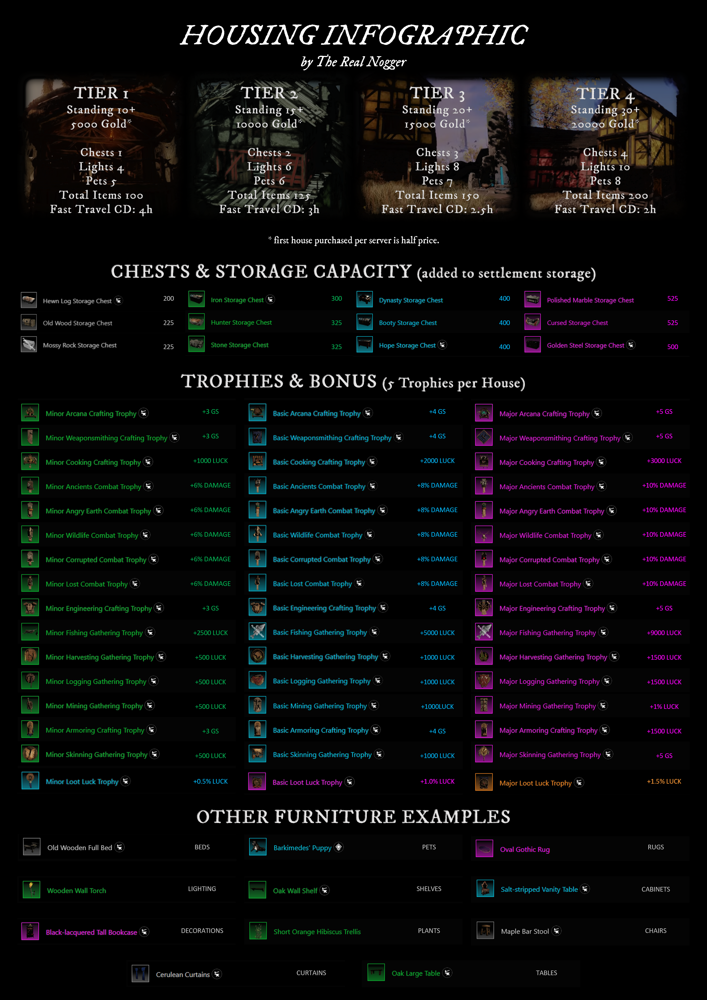

Documentation New World
Table of Contents
1. Carte interactive
2. Mécaniques
2.1. Types de dégâts
Les dégâts infligés sont affichés avec un code couleur, correspondant à la résistance/neutralité/vulnérabilité vis à vis du type de dégâts que fait votre arme.
| Couleur | Signification | Conséquence sur vos dégâts |
|---|---|---|
| Bleu | Résistance | Malus |
| Blanc | neutre | Base |
| Jaune | Vulnérabilité | Bonus |

Figure 1: Tableau des résistances en fonction des factions de mobs
2.2. Buffs/Debuffs
| Effect | Description | limit |
|---|---|---|
| Cleanse | Removes and provides immunity to all debuffs. | |
| Empower | Increases attack damage. | 50 % |
| Fortify | Increases damage absorption. | 50 % |
| Haste | Increases run and/or sprint speed. | 50 % (ignored by Haste Elixir) |
| Heal | Restores health over time. |
| Effect | Description | limit |
|---|---|---|
| Slow | Reduces run and/or sprint speed. | 50 % |
| Rend | Reduce damage absorption. | 30 % |
| Weaken | Reduces attack damage. | 50 % |
| Disease | Reduces healing. | 50 % |
| Exhaust | Reduces stamina regeneration. | - |
| Silence | Disables abilities but allows basic attacks. | - |
| Root | Disables movement but allows basic attacks and abilities. | - |
| Stun | Disables all actions. | - |
| Effect | Description |
|---|---|
| Burn | Applies Fire damage over time. |
| Bleed | Applies Standard damage over time. |
| Poison | Applies Magic damage over time. |
| Shock | Applies Stamina damage over time. |
3. Armes/Classes
Les armes remplacent les traditionnelles "classes" dans new world. Il est possible d'en équiper deux simultanément et d'en changer à n'importe quel moment ?
Il y a un niveau de maîtrise pour chaque type d'arme. Le niveau de maîtrise d'une arme se monte en… jouant avec cette arme. Il est ainsi possible de monter toutes les armes en même temps, bien que cela ne soit pas conseillé : en étant moyen partout, on est bon nulle part.
Figure 2: Comment utiliser les fiches d'armes

Figure 3: Infos sur l'arc

Figure 4: Infos sur le bâton de feu

Figure 5: Infos sur la hace à deux mains

Figure 6: Infos sur la hachette
Figure 7: Infos sur le gantelet de glace

Figure 8: Infos sur le bâton de vie

Figure 9: Infos sur le mousquet

Figure 10: Infos sur la rapière

Figure 11: Infos sur la lance

Figure 12: Infos sur l'épée
4. Objets
4.1. Rapide introduction :
5. Système de Craft
Trois étapes sont nécessaires à la réalisation complète d'un objet.
- récolte ::
- Transformation ::
- Fabrication ::
5.1. Détails sur la récolte
Infographies récupérées ici : https://www.reddit.com/r/newworldgame/comments/prcvrn/updated_new_world_gathering_infographics/
5.1.1. Deep rock galactic

Figure 13: Guide des bonus de Dylan

Figure 14: Guide des objets issus de la mine
5.1.2. Chasse

Figure 15: Guide des bonus de la chasse

Figure 16: Guide des objets issus de la chasse
5.1.3. Collecte de plantes

Figure 17: Guide des bonus de la collecte de plantes
Figure 18: Guide des objets issus de la collecte de plantes
5.1.4. Bûcheron

Figure 19: Guide des bonus du bûcheron

Figure 20: Guide des objets issus du bûcheronnage
5.1.5. Anti-Fun (pêche)
6. J'aime pas m'amuser (Min-max)
7. Stephan plazza
Les maisons peuvent êtres achetées en ville et procurent des bonus locaux :
- Plus de stockage
- Possibilité de fast travel gratuit (avec Cooldown)
- Utiliser des trophées, qui accordent des bonus non négligeables (est-ce local ?)
A compléter :
- Qu'est-ce que le "standing" ?
- Qu'est-ce que les "light" ?
- A quoi servent les "pets" ?

Figure 21: Guide bonus maisons
La première maison coûte -50%, ça peut valoir le coup d'attendre une maison plus haut tier ? https://www.reddit.com/r/newworldgame/comments/pr439u/starting_cities_house_buying_guides/
Guide plus complet : https://newworldfans.com/articles/new-world-housing
8. Jouer ensemble :
8.1. Choix faction
Items exclusifs de faction : https://www.reddit.com/r/newworldgame/comments/pr47yf/faction_exclusive_items/
8.2. Se synchroniser pour les quetes
8.3. Compagnie
8.3.1. Requêtes entre membres :
Un mec à fait ça, pk pas : https://www.reddit.com/r/newworldgame/comments/ppbvm5/company_item_request_and_item_giveaway/